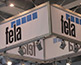
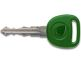

News & Presse
{% for post in site.posts %}
{{ post.teaser.title }}
{{ post.teaser.text }}
{% endfor %}

FOSChLCD: Mehr Autonomie für's Land!
Moderne Haltestellenanzeigen auf Basis von cholesterischen LCD erschließen auch ländliche Räume für dynamische Fahrgastinformationen

Neuer CarLoc® AT-Rail von FELA: verbessert Produktivität und Effizienz im Schienengüterverkehr
Transportfortschritt, Stoß- und Flachstellendetektion sowie Laufleistungserfassung im Schienengüterverkehr mit optimalem Preis-Leistungsverhältnis!

Sicherheit und Kosteneffizienz als zentrale Themen in Bau- und Logistik
CarLoc AT-Guard: komfortable Lösung für Diebstahlschutz für Baumaschinen und Sendungsverfolgung

Neue Telematiksysteme für Diebstahlschutz und Sendungsver-
folgung von FELA Sicherheit und Kosteneffizienz als zentrale Themen der Transport- und Logistikindustrie
folgung von FELA Sicherheit und Kosteneffizienz als zentrale Themen der Transport- und Logistikindustrie

Fela auf der UITP vom 26.- 30. Mai 2013; Halle 2D, Stand 420, in Geneva
Fela auf der UITP – einfache Lösungen steigern Mobilität und Produktivität im öffentlichen Verkehr Webbasierte, modulare Lösungen für zukunftsfähiges Verkehrsmanagement

Besuchen Sie uns vom 08-12. April 2013, Halle 1 Stand F24, in Hannover
Hier können Sie sich über die Hannover Messe informieren

Erfolgreiche Messepremiere auf der InnoTrans 2012 in Berlin
Grosses Interesse an FELA-Fahrgastinformationssystemen

FELA zieht positives Resümee zur IAA Nutzfahrzeuge 2012
FELA liegt mit den CarLoc-Telematiksystemen voll im Trend
Modulare Verkehrsmanagement-Lösung EasyDrive erhöht Mobilität der Fahrgäste
Fela Management AG stellt EasyDrive-Lösung für Bahn und ÖPNV vor
Besuchen Sie uns auf der InnoTrans
Produktneuentwicklungen werden in Halle 2.1, Stand 214 vorgestellt
FELA auf der IAA Nutzfahrzeuge 2012
Produktneuentwicklungen werden in Halle 25, Stand B72 vorgestellt

Eco-Driving spart bei LKW-Flotten jährlich bis zu 10% Kraftstoff
FELA stellt erweiterte Einsatzmöglichkeiten des CarLoc-Systems vor

FELA holt Adyna GmbH an Bord
Adyna und Fela – gemeinsam neue Märkte im Energiemanagement erschließen